图 45.1 旋鳃虫 (Spirobranchus giganteus) 是一种圣诞树样的蠕虫。软体动物和环节动物栖居在陆地或水中，它们是成功进化的一个庞大的类群，有些最奇异的种类生活在海洋里。
尽管无体腔动物和假体腔动物在进化史上都很成功，但生命还是进化出了第三种结构，并且动物界的大多数种类都拥有这种结构。我们将从软体动物开始讨论真体腔动物，它们包括蚌、蜗牛、蛞蝓和章鱼等。环节动物（图 45.1）像蚯蚓、水蛭和船蛆等也是真体腔动物，而且是最早出现节段化的生物之一。触手冠动物是海产动物，它们因为拥有种叫触手冠的独特的摄食构造而被归于一类，它们有着介于原口动物和后口动物之间的特征。本章也会讨论触手冠动物，其余的真体腔动物将在第46、47和48章讨论。
真体腔的出现是动物身体结构进化中的一个重大进步。真体腔动物具有新的身体构造，它重新分配了体液的位置，使更复杂的组织和器官得以发展。这种新颖的身体构造也令动物演化出形形色色的身体结构，并且生长成比无体腔动物大得多的体型。软体动物和环节动物是最早的真体腔动物。
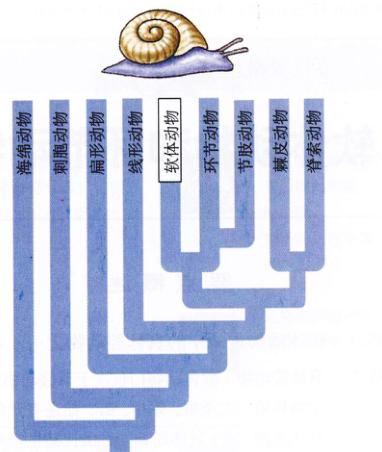软体动物门 (Mollusk) 是仅次于节肢动物的种类繁多的一个门，已知的种类超过11万种。软体动物包括蜗牛、蛞蝓、蚌、扇贝、牡蛎、章鱼和许多其他人人熟悉的动物（图 45.2）。一些软体动物有着美丽又精致的外壳，它们一直都是科学家和业余爱好者搜集、收藏和研究的宠儿。石鳖和裸鳃动物是两种人们不太熟悉的软体动物。软体动物最主要的特征是有真体腔。尽管这一个门的动物千奇百怪，但它们都有着软体动物体制的基本要素，这可以在图 45.3 中看出。
软体动物在海洋中进化，如今大多数还生活在海里，数目众多，分布广泛。一些生活在淡水里或陆地上，比如你家后院的蜗牛和蛞蝓。即使在只是季节性湿润的地方，软体动物也能繁盛地生长。有时，这类地方看上去很干燥（比如沙漠中的岩缝），但在每年的某个时期也会有短暂的水分供应。
软体动物是人类重要的食物来源。像牡蛎、蚌、扇贝、贻贝、乌贼和章鱼等都是软体动物里的美味佳肴。在其他方面，软体动物对我们也有重要的经济价值。比如珍珠贝能生产珍珠，而一种称为“珍珠之母”的材料是由多种不同种类的软体动物（主要是鲍鱼）产生的，它可用于制作珠宝和其他装饰品。但并不是所有的软体动物都是对人类有益的。双壳类（Bivalve）中有一种叫船蛆的软体动物，寄居在没入海水的木材之中，对船只、船坞和木桩造成破坏。最近一种借助压舱水由欧洲侵入北美的斑马贻贝就对水生态系统造成了巨大的破坏。蛞蝓和陆生蜗牛会对庭院花卉、蔬菜和庄稼造成大面积的破坏。还有的软体动物是许多危险的寄生虫，如第44章谈到的几种线虫和扁虫的中间宿主。
软体动物的体型大小差异非常大，有些微小得几乎看不见，有些又大得惊人，但大多数身体最长方向的尺寸是几厘米。偶尔能在海边碰见被冲上岸的巨型乌贼，可达 21m 长！但人们还未在巨型乌贼的自然生长环境中观察过这个庞然大物。这种巨型乌贼能重达 250kg，是体型最大的无脊椎动物，而巨型蛤则是最重的无脊椎动物（图 45.4）。海洋深处也许生活着数以百万计的巨型乌贼，虽然人们很少捕捉到它们。另一种巨型的软体动物是双壳纲的长砗磲 (Tridacna maxima)，长 1.5m，重 270 kg。
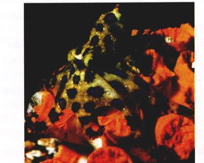图 45.2 软体动物 这种有蓝色光环的章鱼是少数几种对人有危险的软体动物之一。它们异常美丽，却有毒腺和锋利的喙，潜水员都尽量避开它。
图 45.3 真体腔的进化 以上是一幅软体动物的身体结构示意图。软体动物的体腔是真体腔，完全封闭于中胚层中。中胚层和内胚层能充分接触，发生作用，导致高度特化的器官（如胃）的出现。
许多软体动物是肉食性的。它们通过化学感受器确定猎物的方位。蜗牛里有角质的颚和锉状的齿舌。
蜗牛用肌肉质的足在地上爬行。乌贼能通过喷出外套腔中的水而推动自己前进，像喷气式飞机一样。
图 45.4 巨型蛤 软体动物的种类数量仅次于节肢动物，它们几乎遍布地球的每一个角落。这种长砗磲 (Tridacna maxima) 的壳由于共有沟鞭藻（即甲藻）而呈现绿色。尽管这种巨型蛤和别的双壳纲动物一样是滤食动物，但沟鞭藻通过光合作用合成的养料已成为它的主要食物来源。有些巨型蛤的长度将近 1.5m，重达 270 kg。
软体动物基本的体制都是很明显的两侧对称（图 45.5）。它的消化、排泄和生殖器官集中形成一个内脏团 (visceral mass)。肉质的足是它的主要运动器官。在身体前端还会分化出头部。背部体壁向外褶皱（通常是两个），褶皱和内脏团之间围成一个腔，褶皱组成了外套膜 (mantle)。一些软体动物的外套腔 (mantle cavity) 有肺的功能，另一些软体动物的外套腔里有鳃 (gill)。鳃是外套膜的特化部分，由充满血管的丝状突起系统构成。这些突起大大增加了用于气体交换的表面积，从而大大提高了软体动物的整个呼吸能力。软体动物鳃的效率非常高，许有多鳃软体动物能利用 50% 溶解在流经外套腔的水中的氧气。许多软体动物的外套膜表面能分泌一层保护壳。
软体动物的壳由三层组成，外层是角质层，富含蛋白质，能保护里面富含钙的两层不被侵蚀；中间是一层紧密叠如的碳酸钙晶体；内层是珍珠层，会随着珍珠贝年龄的增长而加厚。当这一层达到一定的厚度时就能够用来做珍珠质了。某些异物，比如一粒沙子，进入双壳纲软体动物（如蚌和珍珠贝）的外套膜和壳内层之间时，就可能形成珍珠。外套膜用一层又一层的物质将异物包裹起来，以减轻它所引起的刺激。软体动物的外壳主要起保护作用，许多软体动物都会缩进壳里——如果它们有壳的话——以保护自己。
对水生的软体动物来说，鳃上的纤毛推动着细小的水流连续进出外套腔。这些水流不仅带来氧气，还能为双壳类带来食物，并运出废物。配子产生后，通常也是由水流带出体外的。
软体动物的足是肉质的，适宜运动、附着和捕食（对乌贼和章鱼来说），或者同时兼有上述各种功能。有些软体动物能分泌黏液，黏液形成一条道，而它们就用足在这条道上滑行。头足纲的章鱼和乌贼的足分裂成几个臂，也叫做触手 (tentacle)。一些浮游类型的软体动物终生自游游泳生活，它们的足特化成了翼状的突起或纤细的鳍。
除双壳纲以外，所有软体动物最明显的特点就是具有用于摄食的锉状的舌头——齿舌 (radula)。齿舌主要由数以千万计的排列成行的微小的几丁质牙齿组成（图 45.6）。腹足纲动物（蜗牛及其亲缘物种）用齿舌把藻类和其他食物从它们的附着物上刮下来，然后再把食物送进消化道。其他的腹足动物是积极的捕食者，其中有些用变形的齿舌在猎物的壳上钻孔，从孔中吸食猎物。牡蛎身上常见的小孔就是由那些杀死并吸食它们身体的腹足纲动物钻出来的。
除了头足纲以外，所有软体动物的循环系统都由一个心脏和一个开放的系统组成，血液在这个开放系统中自由流动。软体动物的心脏通常有三室，其中两个心室收集由鳃流入的含氧气的血液，另一个室把这些血液泵进身体的其他组织。软体动物的心脏周围围绕着心脏围心腔的形式出现。
软体动物通过 1~2 个叫做肾管 (nephridia) 的管状结构把含氮废物排出体外。一个典型的肾管有一个开口的漏斗状肾口 (nephrostome)，肾口的周围排列着纤毛。
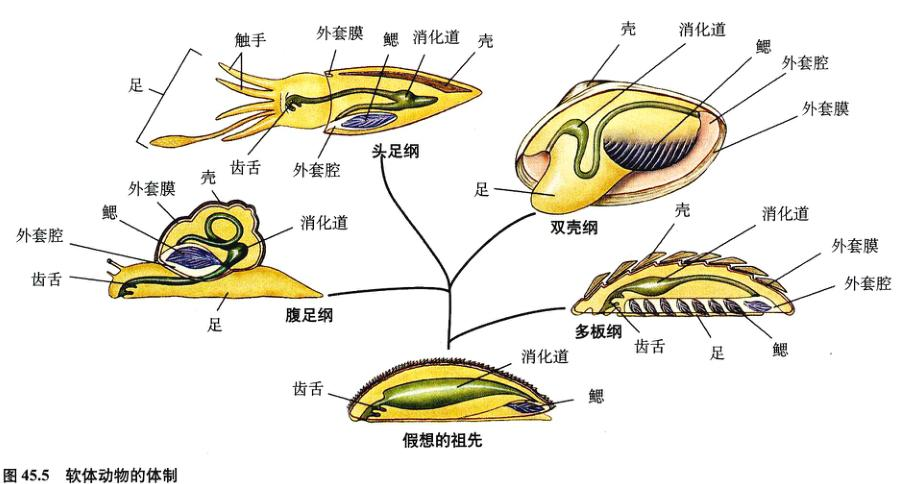图 45.5 软体动物的体制 图中展示了假想的祖先软体动物以及主要纲（头足纲、腹足纲、双壳纲、多板纲）的身体结构演变。
图 45.6 蜗牛的齿舌结构 (a) 齿舌由几丁质组成，覆盖着成行的齿。(b) 齿舌上锉状齿的放大图。
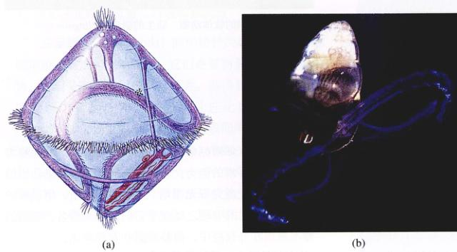图 45.7 软体动物生活史的几个阶段 (a) 软体动物的担轮幼虫，有些环节动物和其他门的动物也有类似的幼体。(b) 软体动物的面盘幼虫。
经由一条迂回盘曲的细管连接囊状部（膀胱），囊状部又与排泄孔（肾孔）相连。肾管从体腔中收集废物，通外外套腔，废物再经鳃泵出体外。糖分、盐类、水分和其他物质会被肾管壁重新吸收，返回体内用以维持正常的渗透压平衡。
具有闭管式循环系统的动物，如环节动物、头足纲软体动物和脊椎动物的体内，肾管的卷曲细管被毛细血管网所包围。这些毛细血管将循环系统中的代谢废物转移至肾管，然后排出。盐分、水分和其他物质可以被肾管壁重吸收，再次返回毛细血管。因此这些动物的排泄系统要比无体腔动物的焰细胞 (flame cell) 有效得多，焰细胞是从体液中吸取废物的。软体动物是最早进化出高效的排泄系统的动物之一。除了脊索动物外，所有有闭管式循环系统的真体腔动物都有类似的排泄系统。
大多数软体动物有性别分明的雄性和雌性个体。尽管有一些双壳纲和许多腹足纲的软体动物是雌雄同体，但它们通常进行的也是异体受精。值得一提的是，一些海蛞蝓和牡蛎能在一个季节里多次转化性别。
大多数海生软体动物进行体外受精。雌雄个体把配子排到水中，配子在水中混合并发发生受精作用。腹足动物大多是体内受精，即雄性把精子放进雌性体内。体内受精是腹足纲动物能移居陆地的一个重要的适应性。
许多海生软体动物有能够自由游动的幼体，叫担轮幼虫 (trochophores)（图 45.7a），这种幼虫和许多海生环节动物的幼虫很相似。担轮幼虫通过环绕在身体中间的一排纤毛游动。双壳纲动物和许多海蜗牛在担轮幼虫阶段后是另一个可自由游动的幼虫阶段——面盘幼虫 (veliger) 阶段。面盘幼虫开始出现足、壳和外套膜（图 45.7b）。担轮幼虫和面盘幼虫在海里四处飘荡，软体动物就这样移动到新的地方。
软体动物有 7 个纲，我们将具体介绍其中 4 个代表性的纲：①多板纲 (石鳖)；②腹足纲 (蜗牛、蛞蝓、笠贝及亲缘物种)；③双壳纲 (蚌、牡蛎、扇贝及亲缘物种)；④头足纲 (章鱼、乌贼、墨鱼以及鹦鹉螺等)。通过对现存的软体动物和化石的研究，科学家推测古软体动物很可能是一些背腹扁平，身体不分节，靠腹部滑行的蠕虫状生物。它们也可能有几丁质的表皮和重叠的石灰质鳞片。另一些科学家则认为，软体动物来源于身体分节的祖先，后在进化中才逐渐丢失了体节。
多板纲 (Polyplacophora) 的石鳖 (chiton) 是海产软体动物，身体呈椭圆形，有 8 个覆瓦状排列的石灰质贝壳，身体不分节。石鳖有宽而扁平的足爬行，足四周被沟或外套腔环绕，鳃长在外套腔里。大多数石鳖是食草动物，生活在浅海，但也有许多种类栖息在 7000 多米的深海中。
腹足纲 (Gastropoda) 已知种类约有 40 000 种。这个纲的动物主要生活在海洋里，也有些种类生活在淡水中或陆地上（图 45.8）。大多数腹足纲动物有壳，也有一些（如蛞蝓和裸鳃类）在进化过程中丢失了壳。腹足纲一般用足爬行，有些也可用足游泳。
大多数的腹足纲动物有一对触角，触角顶端有眼。但在较高级的种类中，这种触角已经消失。许多腹足纲的动物的口腔里有角质的颚和齿舌。
腹足纲动物在胚胎发育过程中会经历扭转 (torsion)。扭转是外套腔和肛门由身体后端移到身体前端的过程。扭转是由侧肌的不对称生长而引起的，即身体一侧的生长比另一侧要快得多。身体扭转 120° 的旋转使外套腔移到头部上方，还扭转了许多内部结构。一些腹足纲动物还会发生不同程度的反扭转 (detorsion)。腹足纲动物壳上螺旋的形成则是另一个过程。这个过程令大部分腹足纲的右鳃和右肾管不见了。因此，腹足纲动物的内脏团在进化过程中变成了非两侧对称。
腹足纲有着极其多样的摄食习惯。一些是捕食者，一些则刮食岩石（或水族馆玻璃）上的藻类，还有些是腐食动物。有许多种类是食草动物，其中有些陆生的类型会严重地危害园林和农业。牡蛎用齿舌在其他软体动物贝壳上钻洞，并从中吸食软体动物的内含物。有些芋螺 (cone shell) 的齿舌变成有毒的鱼叉状，能高速射向猎物。
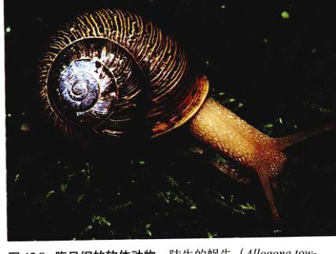图 45.8 腹足纲的软体动物 陆生的蜗牛 (Allogona townsendiana)。
裸鳃类（如海蛞蝓）是积极的捕食者。一些裸鳃类有一种不同寻常的能力，它们能将捕食到的腔肠动物的刺细胞从消化道完好无损地“搬”到身体表面，用以保护自己。裸鳃类的有趣之处在于它们因此而得名，它们的鳃不是包在外套腔中，而是暴露在背部表面。
陆生腹足类的祖先生活在水里，它们的外套腔里有鳃。现在这些陆生腹足类的外套腔中没有鳃，而代之以丰富的血管，具有肺的功能。这种结构是生活于富氧环境中的生物进化而来的，它在水里的效率比不上鳃，但在含氧多的环境中却比鳃更有效地吸收氧气。
双壳纲 (Bivalvia) 包括蚌、扇贝、牡蛎和鲍鱼等。双壳类身体左右两侧各有一个贝壳，二者在背部相连（图 45.9）。一条韧带把两扇壳绞连在一起，使它们能张开。拉着这条韧带的是一两块闭壳肌，它们能把壳闭上。壳和韧带是由外套膜分泌的，外套膜还把两瓣壳间的内脏团包裹起来。外套膜往外延伸形成两条伸出来的虹吸管，一条是进水管，另一条是出水管。虹吸管通常有通气管的作用，使双壳类在完全埋于沉积物中时也能过滤水分。内脏团两侧各有一个折叠得很复杂的鳃。鳃由多对富含血管的鳃丝组成。鳃上纤毛有规律的摆动产生一种水循环。大多数双壳纲动物是固着生长的滤食动物。它们从经过外套腔的水流中摄取小型生物。
双壳纲没有确定的头部或齿舌，这一点与腹足纲动物不同（图 45.5）。但大多数有一只楔形的足，不同种类的双壳类的足适应不同的功能，如爬行、钻洞、清洁动
物或借此固着在洞穴中。一些蛤能利用足部肌肉的收缩在沙或土中快速地打出一个洞。
双壳类幼体分布广泛，而成体大多数已适应了穴居生活，也有一些扇贝属的动物能用它们巨大的闭壳肌使壳一张一合，在水中迅速移动。这种肌肉就是我们通常吃的扇贝肉了。扇贝的身体边缘排列着触手状的突起，这些突起的尖端有复眼。
双壳纲大约有 1 万种。它们大多生活在海水中，也有一些生活在淡水中。在北美洲的一些河流和湖泊中，有 500 多种“水中仙女”——淡水珍珠贝。
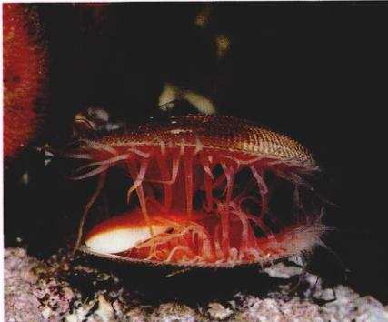图 45.9 双壳纲动物 ——粗糙锉蛤 (Lima scabra) 它的双壳张开，露出触手。
头足纲 (Cephalopoda) 的动物种类超过 600 种，包括章鱼、乌贼和鹦鹉螺等，它们是智商最高的无脊椎动物。它们是海洋里积极的捕食者，游得很快，在与鱼类的竞争中颇为成功。它们的足进化成一系列触手 (tentacle)，上面有吸盘，固着或能牢牢抓住猎物的钩。乌贼有 10 只触手（图 45.10），章鱼——就像它的俗名“八爪章鱼”所表明的一样——有 8 只触手，鹦鹉螺则有 80~90 只触手。一旦猎物被这些触手抓住，它就会被像喙一样强而有力的颚咬住，并被齿舌一般的舌头送进口中。
头足动物有高度发达的神经系统，它们的大脑在软体动物中也是很独特的。它们的眼睛十分精巧，有着类似千脊椎动物的眼睛的结构，尽管两者是沿不同的进化路线发展而来的（详见第55章）。许多头足动物有复杂的行为模式，表现出很高的智力水平。章鱼很容易通过训练学会分辨不同类型的物体。头足纲大多数动物有闭管式循环系统，是软体动物中唯一有这种系统的动物。
虽然头足纲是从有壳的祖先进化来的，但现存的头足动物除了少数鹦鹉螺以外都没有外壳。头足纲像其他软体动物一样让水流进外套腔，再从虹吸管排出。头足纲动物已把这种流水系统改装成了类似喷气式飞机的推动装置。受到威胁时它们会猛烈地喷射水流借此推动自己前进。
大多数章鱼和乌贼能根据周围的环境改变身体的颜色，体色的改变还能在同伴间传递信息。它们通过色素细胞 (chromatophore) ——一种埋于上皮组织下的色素囊来实现这一变化。
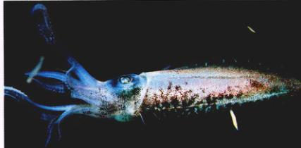图 45.10 头足纲动物 乌贼是积极的捕食者，是鱼类的有力竞争者。
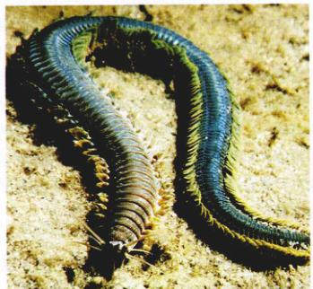图 45.11 多毛纲的环节动物 沙蚕 (Nereis virens) 是一种分布广泛的捕食性海生多毛纲动物。具有羽毛状的疣足，用于呼吸和运动，也能像颚一样用于捕食。这种动物可作为鱼饵。
环节动物身体构造的一个关键性转变是身体分节，即身体由一系列体节构成。首先出现分节现象的最可能是环节动物门中的环带蠕虫 (annelid worm)（图 45.11）。身体由重复的单元（体节）组成的优势之一在于，这些单元的发育和功能可以在单个体节或者一组体节的水平上受到很好的调控。比如不同的体节可以有不同的器官组合，行使不同的功能，比如生殖、摄食、运动、呼吸或排泄。
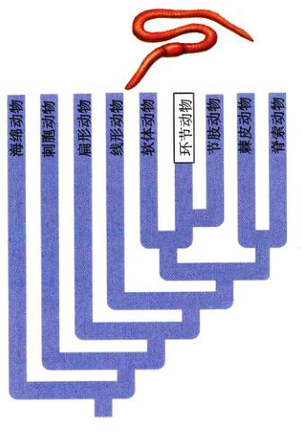环节动物 (Annelid) 有三分之二生活在海洋里（约有 8000 种），剩下的（约有 3100 种）大部分生活在土壤中。环节动物有三个主要特征。
(1) 重复的体节：环节动物的身体由一系列环状的体节纵向排列构成的，看起来就像一叠油炸圈饼或一卷硬币（图 45.12）。体节的内部被隔膜 (septa) 一个个分隔开的，就像潜水艇的船舱是被舱壁隔开一样。每个圆柱状的体节都有重复的排泄器官和运动器官。每个体节的体腔内的液体都形成一种液压机构，使体变变得强而直，就像充满气的气球一样。体节的肌肉推着这些液体。因为体节是分开的，所以每一节都能够独立收缩或膨胀。这使环节动物能进行复杂的运动。
(2) 特化的体节：环节动物前端的体节特化，包含感觉器官。有的感觉器官对光敏感，一些环节动物更是进化出了有晶状体和视网膜的精巧的眼睛。身体前端的一个体节里出现了脑神经节 (cerebral ganglion)，也叫脑。
(3) 联系：虽然身体被隔片分隔开，但体节之间仍存在物质和信息的交流。环节动物有闭管式循环系统，能把血液从一个体节带到另一个体节。腹神经索把各个体节的神经节、神经中枢和脑连接起来。这些神经连接是环节动物作为一个统一而协调的有机体而发挥作用的决定性特征。
环节动物基本的体制是管套管，最里面的消化管即由口到肛门的管，系“悬浮”在体腔之中。组成消化道的管道分为几个部分——咽、食道、嗉囊、砂囊和小肠，各部分有着不同的功能。
环节动物利用它们的液压机构来运动。运动时，环绕着体节的环状肌收缩，挤压体节，使体腔液由体节向两端聚出，就像从牙膏简挤牙膏一样。由于液体被隔片挡在体节段里而不能像牙膏那样被挤出来，它就使体节伸长、变细。这时沿身体纵向分布的纵肌收缩，体节恢复原状。对大部分环节动物而言，每个体节上都有刚毛 (setae) ——一种在运动中起固着作用的几丁质毛。伸直某些体节上的刚毛以固着在底物上，再缩回另一些体节上的刚毛，环节动物就这样一部分一部分地探测出身体，可以朝前后两个方向运动。
与节肢动物和大多数软体动物不同，大部分环节动物具有闭管式循环系统。环节动物通过体表与外界交换氧气和二氧化碳；它们大多既没有鳃也没有肺。但它们从外界获取的氧气仍然能够通过血管到达身体各处。身体内前端的一些血管膨大，富含肌肉，成为能够泵血的“心脏”。蚯蚓身体两侧各有 5 个这样的搏动的“心脏”，将血液从主要的背血管（蚯蚓主要的泵血装置）泵进主要的腹血管。
环节动物的排泄系统由具有纤毛的漏斗状的肾管构成，与软体动物的类似。每个体节有一对肾管，它利用一些特化的排泄管收集废物，并经体腔将废物排击体外。
图 45.12 分节的进化 环节动物门的蚯蚓和海产的多毛纲动物很可能是最先进化出具有部分重复体节的身体构造的动物。体节之间通常通过隔片从内部分隔开。
环节动物是一类种类繁多的真体腔动物，其主要特征是身体由连续的体节组成。每个体节都有独立的循环、排泄和神经单元。每个体节都有刚毛。
已知的环节动物大约有 12 000 种，生活在许多不同的地方。它们的体型大小不一，小的只有 0.5 mm，大的像一些多毛纲动物或巨型澳大利亚蚯蚓体长能超过 3m。环节动物分为 3 个纲：①多毛纲，有 8000 多种，营自由生活，几乎全部生活在海洋里；②寡毛纲，包括陆地上的蚯蚓和相关的生活在海洋淡水里的蠕虫，约有 3100 种；③水蛭纲，主要是生活在淡水中的捕食者和吸血者，约有 500 种。人们认为环节动物是从海洋中进化而来的，而多毛纲是其中最原始的一个纲。寡毛纲也许是由多毛纲逐渐从咸水到入海口再到溪流这样进化而来。水蛭和寡毛纲都有一个叫生殖带 (clitellum) 的器官。生殖带能分泌特化的卵袋 (cocoon)，用于接收卵子。一般认为水蛭是从寡毛纲进化来的，营吸血的体外寄生生活。
多毛纲 (Polychaeta) 包括沙蚕、毛翼虫、背鳞沙蚕、沙蠋、双叶鳞蠕虫、海鼠及其他许多物种。这些动物通常非常漂亮，千姿百态，色彩鲜艳（图 45.13 及图 45.1）。由于多毛纲在某些栖居地数量庞大，它们通常是海洋食物链中的重要一环。
一些多毛纲动物栖居在管道里，或在变硬的泥土、泥沙、黏液状分泌物或石灰岩的永久性洞穴中。这些固着生活的多毛纲动物主要是滤食生物，它们从生活的管道中伸出羽毛状的触手搅动水流，从中获得食物。另外一些多毛纲动物则积极地游泳、爬行或钻洞。许多是活跃的捕食者。
多毛纲动物有高度发达的头部，头部有特化的感觉器官。这一点与其他环节动物不同。它们的身体通常明显地分为几个部分，每一部分都由结构和功能相关联的体节组成。它们的感觉器官包括眼睛，眼睛可以是简单的眼点，也可能是大而明显的柄状眼 (stalked eyes)。
多毛纲动物的另一大特征是大部分的体节上都有成对的、肉质的、浆状的疣足 (parapodia)。疣足上长着刺状的刚毛，有游泳、钻洞和爬行的功能。由于它们大大增加了身体的表面积，所以，疣足在气体交换中也有重要功能。一些栖息在洞穴或管道中的多毛类的疣足上生长有起固着作用的钩。多毛纲动物用疣足缓慢爬行。快速爬行和游泳是靠身体波浪状的摆动来实现的。另外，多毛纲动物的表皮还有一种带纤毛的细胞，可以辅助呼吸和摄食。
多毛纲动物通常是雌雄异体，一般进行体外受精，在水中或其他远离双亲的地方进行。与其他环节动物不同的是多毛纲通常没有永久性的生殖腺 (gonad)，即产生配子的器官。它们由体腔内壁或隔片上的生殖细胞产生配子。受精后产生有纤毛的担轮幼虫，与软体动物的幼体相似。担轮幼虫需要漂浮生活很长一段时间，然后再增加体节，发育成与成体十分相似的幼体。
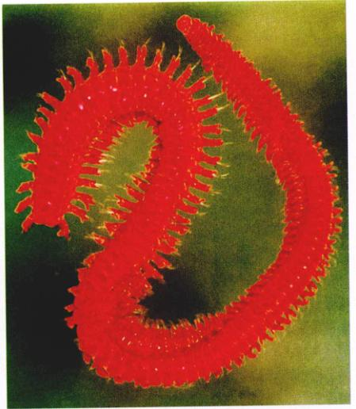图 45.13 多毛纲动物 一只闪闪发亮的扁须虫 (Oenone fulgida)。
寡毛纲 (Oligochaeta) 蚯蚓的身体由 100~175 个相似的体节组成。蚯蚓穿过土壤，通过扩张其强壮的咽部吞进有机物和其他物质。它们咽下的东西会一直通过它那条长而直的消化道。消化道的某个区域——砂囊会借助土壤颗粒把有机物碾碎。
经过消化道的物质在蚯蚓的洞穴外堆积下来，在洞口形成了不规则的土堆。蚯蚓通过这种方式疏松了土壤通了气，又使土壤变得肥沃起来。一只蚯蚓每天能吃掉同体重的东西。
从蚯蚓这种地下生活方式来看，它没有眼睛也就不足为奇了。但是蚯蚓有许多感光细胞、化学感受细胞和触觉感受细胞，这些细胞主要集中在近身体两端的体节内，因为这些地方最有可能遇到光或其他刺激。蚯蚓的刚毛比多毛纲的少，它没有疣足或头部。
蚯蚓是雌雄同体动物，这一点也与多毛纲动物不同。交配时，两条蚯蚓的头部朝向不同方向，腹部紧贴（图 45.14）。生殖带是蚯蚓身体上一条加厚的带子；它分
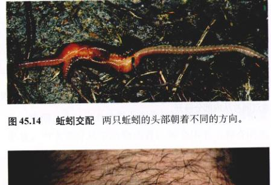图 45.14 蚯蚓交配 两只蚯蚓的头部朝着不同的方向。
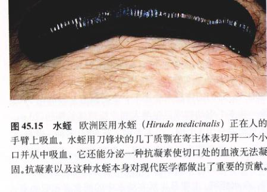图 45.15 水蛭 欧洲医用水蛭 (Hirudo medicinalis) 正在人的手臂上吸血。水蛭用刀锋状的几丁质颚在寄主表皮切开一个小口并从中吸血，它还能分泌一种抗凝素使切口处的血液无法凝固。抗凝素以及这种水蛭本身对现代医学都做出了重要的贡献。
泌的黏液使两条蚯蚓交配时贴在一起。交配一方从一个特化体节的雄性生殖孔中释放出精子，并将其送入另一方的精子器 (sperm receptacles) 中。这个过程是双向的，因此双方可同时交换精子。
两条蚯蚓分开两三天后，各自的生殖带都会分泌一个被几丁质保护层包着的有黏液的卵袋。这个卵袋经过身体的雌性生殖孔时——这个过程随着蚯蚓的爬行而发生——它会从孔中得到卵子。接着它继续经过身体，与交配时沉积的精子混合。受精作用就在卵袋里发生。当卵袋最后经过身体末端时，它的两端将挤在一切。受精卵在卵袋里发育成与成体相似的幼虫。
水蛭纲 (Hirudinea) 的水蛭主要生活在淡水里，有些生活在海洋里，一些热带水蛭生活在陆地上。大多数水蛭体长 2~6 cm，但有一种生活在热带的水蛭能长达 30 cm。水蛭通常背腹扁平，有点像扁形动物。它们雌雄同体，在繁殖季节会长出生殖环，由于不能进行自体受精，水蛭进行的都是异体受精。
水蛭的体腔有所简化，而且不像多毛纲和寡毛纲那样被隔片分隔在各个体节里，而是贯通整个身体。水蛭在身体的一端或两端进化出了吸盘。若水蛭的身体两端都有吸盘，移动时它先固定一端，接着再固着另一端，做拱形移动。许多水蛭会游泳。除了一种蚓蛭外，其他水蛭都没有刚毛。
一些水蛭能吸取其他动物的血液。许多淡水中的水蛭是体外寄生虫，它们能长期寄居在寄主身上，不时吸取它们的血液。
人们研究的最清楚的是一种欧洲医蛭 (Hirudo medicinalis)（图 45.15）。医用水蛭个体长 10~12 cm，有刀锋状的几丁质颚，可以像锉刀一样锉入寄主体内。这种水蛭还在伤口上分泌抗凝素，防止血液流出时凝固。一旦它在寄主身上打开了一个洞，它那强有力的吮吸肌就会迅速地从伤口吸取血液。水蛭用于医疗已有几百年的历史，它曾用于从一些误认为由血液过多而罹患疾病的患者身上吸血。今天，欧洲有些制药公司仍然饲养并出售水蛭，用于吸食手术产生过量的血。外科手术后，可能因为静脉功能失常，血液不能正常循环而凝固。血液凝固使动脉无法供应新鲜血液，组织会因此而死亡。水蛭把过量血液吸出后，新的毛细血管在一周内就能生成，组织就可以保持健康。
三类海生动物——帚虫动物门、外肛动物门和腕足动物门具有一个共同的特征——都有触手冠 (lophophore)。触手冠是长在口周围的环状或 U 形的脊，它上面具有两排中空的有纤毛的触手。由于这一不同寻常的特点，人们认为这三门动物有亲缘关系。触手冠可能来自同一个祖先。触手冠动物 (lophophorate) 的体腔延伸到触手冠和触手对，触手冠既可作为气体交换的表面，又是一个捕食器官。触手冠动物用触手冠上的纤毛来获取有机碎屑，捕食浮游生物。触手冠动物通常固着于某处或缓慢地移动。
触手冠动物同时兼有原口动物，如软体动物、环节
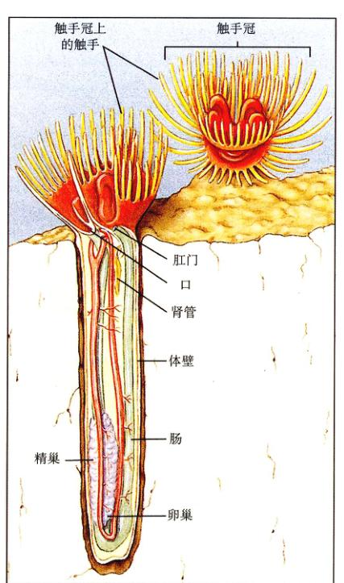图 45.16 帚虫动物门 帚虫 (Phoronis) 生活在它自己分泌的作为身体外壁的几丁质管道中。触手冠由两行平行排列的长着触手的马蹄状的脊组成，在受到干扰时能缩回管中。
图 45.17 外肛动物门 (a) 苔虫 (Plumatella) 群落的一小部分，它们在水底的岩石上生活。左边那个个体的触手冠完全伸展开了，这种结构是属于触手冠动物的 3 个门的共同特点。Plumatella 的微小的个体在受到干扰时会缩回壳里。(b) Plumatella repens 是一种生活在淡水里的苔藓虫。
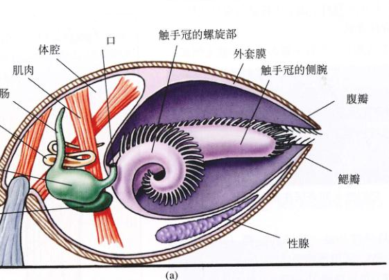 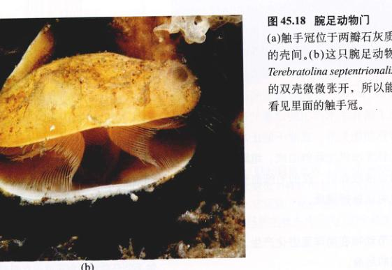图 45.18 腕足动物门 (a) 触手冠位于两瓣石灰质的壳间。(b) 这只腕足动物 Terebratulina septentrionalis 的双壳微微张开，所以能看见里面的触手冠。
动物和节肢动物以及后口动物的某些特征。触手冠动物大多为辐射卵裂 (radial cleavage)，与后口动物相同。触手冠动物体腔的形成方式各不相同，有的类似原口动物，有的类似后口动物。帚虫动物的口来源于胚孔，其他两门动物的口则来源于胚孔相对的胚胎另一端。分子生物学的证据表明，触手冠动物的核糖体无原与原口动物更为接近，应该把它们归入原口动物。尽管三门之间存在着差别，但触手冠这一独特的结构显示了这三门动物似乎是由同一个祖先进化来的。它们之间的关系至今仍是一个谜。
表面看来，帚虫动物门 (Phoronida) 的帚虫与栖息在船坞木桩里的多毛纲动物很像，其实，它们之间有很多重要的差别。帚虫能分泌一种几丁质的管道并终生生活在其中（图 45.16）。它们也能伸出触手来获取食物，受到干扰时就会迅速地把触手缩回，相似之处仅此而已。帚虫动物的身体不是套管的结构，它有一条 U 形的消化道。已知的帚虫动物只有 10 种，身体长度由几 mm 到 30 cm 不等。有些种类喜欢埋在沙里，另一类则单独或共同固着在岩石上。帚虫的发育过程与原口动物相似，卵裂为辐射卵裂，口的来源属原口发育。
苔藓虫 (bryozoan) 属外肛动物门 (Ectoprocta)，看起来像帚虫的袖珍版（图 45.17）。它们很小，通常不超过 0.5 mm，像在岩石、海草或其他没入水中的东西表面的苔藓一样群居生活（其实它们的俗名苔藓虫就出自希腊语的“苔藓动物”）。而外肛动物这个名字则与肛门（直肠）的位置有关，顾名思义，它的肛门长在触手冠外面。已知的 4 000 种外肛动物（包括生活在海洋里和淡水里的种类）是唯一具有非海洋类的触手冠动物。外肛动物能分泌一种称为虫室 (zoecium) 的几丁质小室，用来固着在岩石上或群体的其他成员身上。不同苔藓虫个体通过小室间的孔道交换化学信息。外肛动物的发育过程与后口动物相似，辐射式卵裂，口的来源属后口式发育。
腕足动物 (Brachiopods) 表面上看与蛤很像，也有两扇石灰质的贝壳（图 45.18）。许多腕足动物借助从一块壳的开口中伸出的柄固着在岩石或沙上。它的触手冠在壳里面，在壳微微张开时就开始工作了。虽然现存的腕足动物只有 300 多种，但已知的腕足动物的化石种类超过 3 万种。由于腕足动物数百万年来一直是海洋里的一种常见生物，而且它的贝壳很容易变成化石，科学家经常用它们作为化石指标来确定某个地质时期或沉积岩的类型。腕足动物的发育方式与后口动物相似，辐射卵裂。